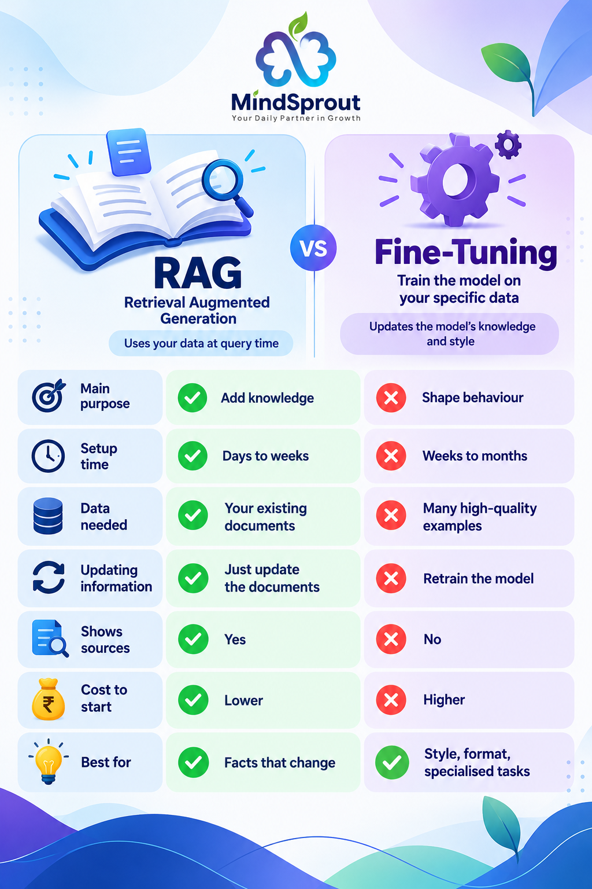
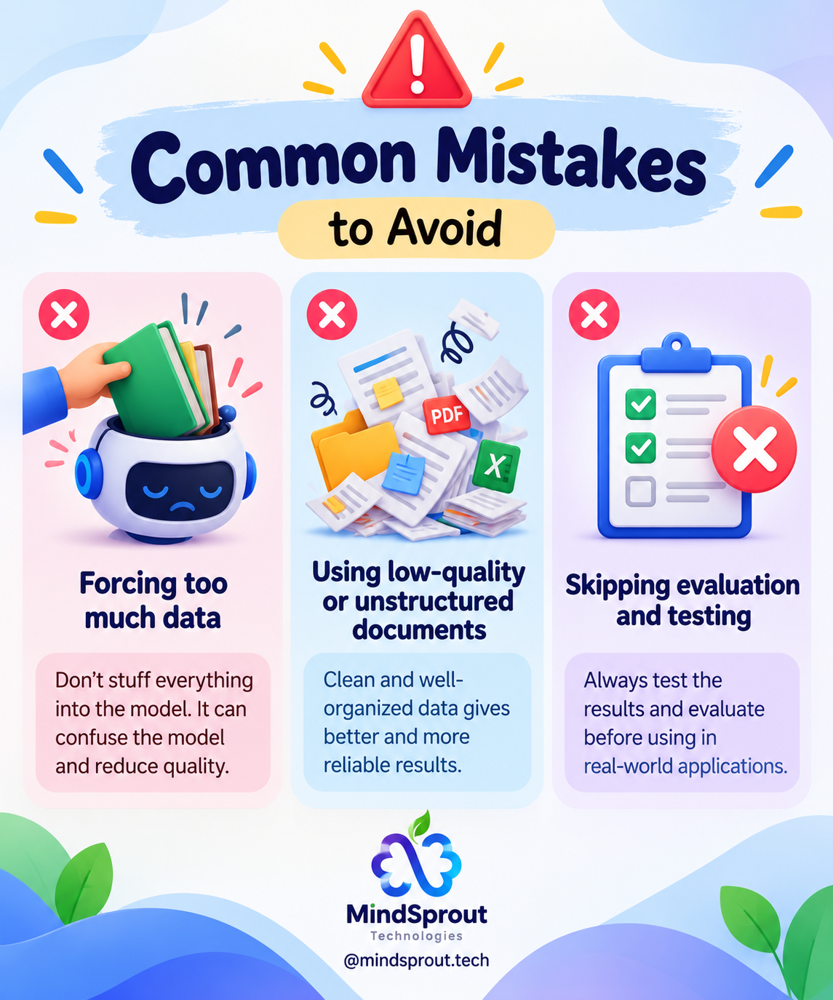

One request we hear often from organisations is: “We want to train ChatGPT on our documents.”
It’s a fair request. When business leaders see the power of Large Language Models, their natural instinct is to pour their internal PDFs, product manuals, and company wikis directly into the model’s weights.
But in most cases, what they actually need isn’t training at all. It’s a fundamentally different architectural approach called RAG (Retrieval-Augmented Generation). Choosing the wrong approach can cost months of engineering effort, hundreds of thousands in unnecessary cloud GPU spend, and a system plagued by hallucinations.
So let’s make this choice simple.
The One-Line Difference:
RAG changes what the model knows.
Fine-tuning changes how the model behaves.
Think of a new employee joining your company:
• RAG is like handing them the company handbook and letting them look things up before answering a question.
• Fine-tuning is like sending them through months of intensive behavioral onboarding until your company’s way of working becomes second nature.
Both are powerful. They simply solve two entirely different problems.
What is RAG? (Retrieval-Augmented Generation)
RAG stands for Retrieval-Augmented Generation. The name sounds complex and academic, but the mechanics are remarkably straightforward:
1. User Asks a Query
The user inputs a natural language question (e.g., "What is our policy on remote work expense reimbursements?").
2. Semantic Document Search
A vector database searches your indexed documents for the exact paragraphs and chunks most relevant to the query.
3. Contextual Augmentation
Those retrieved document excerpts are packaged into a structured prompt alongside the original question.
4. Verifiable Sourced Answer
The LLM generates a clear response grounded exclusively in the provided context, citing page numbers and source URLs.
Notice what happened: The model itself did not change. Its weights were not modified. Instead, the model acts as an intelligent reasoning engine that reads your private reference material in real time and synthesizes an answer.
RAG Works Best When:
- Your information changes frequently: Policies, product prices, inventory counts, legal circulars, and quarterly reports.
- Users need citations and verifiable sources: Enterprise audits require users to click through and verify where an answer came from.
- You need to launch quickly: You can index your documents into a vector database within days without collecting thousands of training pairs.
What is Fine-Tuning?
Fine-tuning means taking an existing pre-trained foundation model (such as Llama 3, Mistral, or GPT-4o) and training it further on hundreds or thousands of specialized prompt-response pairs. Through gradient descent, you adjust the mathematical weights inside the neural network so it internalizes a specific style, formatting discipline, or task logic.
You are not giving the model a document library to browse at query time. You are permanently altering its communication habits and problem-solving patterns.
Fine-Tuning Works Best When:
- You need a highly specific tone or brand voice: You want customer support responses to always be concise, empathetic, and strictly compliant with brand voice guidelines.
- You require rigid structured outputs: Generating flawless JSON, SQL schemas, or extracting specific database fields without syntax breakage.
- You have a narrow, repeated domain task: Medical clinical coding, legal contract formatting, or code generation in a proprietary internal framework.
Side-by-Side Comparison: RAG vs Fine-Tuning
To help decision-makers choose between both approaches, here is the direct engineering breakdown:

| Dimension | RAG (Retrieval-Augmented) | Fine-Tuning |
|---|---|---|
| Main Purpose | Add Knowledge Injects factual data at runtime |
Shape Behaviour Teaches style, tone & syntax |
| Setup Time | Days to Weeks Ingest documents & configure embeddings |
Weeks to Months Data labeling, curation & training runs |
| Data Needed | Your existing documents PDFs, Word docs, Notion, SQL databases |
Hundreds to thousands of examples Clean input/output prompt pairs |
| Updating Information | Instant Document Update Add or remove files without code rebuilds |
Retrain Model Must re-run fine-tuning pipeline & re-evaluate |
| Shows Sources | Yes (100% Verifiable) Direct page numbers, URLs & chunks |
No (Black Box) Model outputs from internalized parametric memory |
| Cost to Start | Lower Capital Outlay Standard vector DB & prompt tokens |
Higher Capital Outlay GPU compute hours, data labeling & hosting |
| Best Suited For | Dynamic facts, policies, live docs & search | Brand tone, rigid formatting & specialized domain tasks |
Practical Examples: Which One Fits Your Use Case?
Let’s look at real-world enterprise scenarios to see how this decision plays out in practice:
HR Policy Assistant
Use RAGEmployees ask: “How many casual leaves do I get, and how does maternity leave roll over?”
Company policies and health insurance guidelines change every financial year. Employees need exact clause references. Update the PDF in your vector store, and the assistant is immediately up to date without a single line of training.
Factory Maintenance
Use RAGA field engineer asks: “What is the correct torque setting for the hydraulic pump on Line B?”
The answer is documented in a 400-page OEM equipment manual. RAG locates the exact schematic page, extracts the torque specification, and displays the exact manual page reference on screen.
Customer Support Replies
Use Fine-TuningA consumer brand wants every support reply to sound warm, empathetic, concise, and strictly adhering to brand guidelines.
This is not about memorizing new facts; it is about behavioral conditioning and tone. Fine-tuning a smaller model on 2,000 top-rated human agent responses produces consistent, on-brand responses at lower latency and token cost.
Report Data Extraction
Use Fine-TuningExtracting the same ten structured variables from thousands of industrial inspection reports into a rigid JSON format.
General foundation models often add conversational pleasantries or violate JSON schema. Fine-tuning guarantees deterministic, strict formatting without lengthy prompt instructions.
Agriculture Advisory: The Hybrid Architecture (RAG + Fine-Tuning)
Use BothFarmers ask questions about regional crop diseases, soil nutrients, and local weather patterns in Punjabi, Hindi, or regional dialects.
How the hybrid system works: RAG searches up-to-the-minute agricultural university guidelines, government seed subsidies, and weather advisories. Meanwhile, a fine-tuned model translates and articulates the synthesized advice into natural, culturally resonant local phrasing that farmers easily understand. This hybrid approach is rapidly becoming the gold standard for high-stakes enterprise applications.
Common Mistakes to Avoid
Over our years building enterprise AI systems at MindSprout Technologies, we have identified four recurring pitfalls that derail AI projects:

1. Fine-Tuning to Add Facts
This is by far the most expensive and frequent mistake. Attempting to stuff company documents into model weights leads to catastrophic forgetting and hallucinated facts. When company policies change next month, you are forced to re-train the entire model.
2. Feeding RAG Messy Documents
RAG is only as capable as its retrieval index. If your vector database is filled with duplicate file versions, messy OCR scans, unparsed tables, and outdated memos, the LLM will retrieve garbage and synthesize misleading answers.
3. Skipping Step Zero (Prompt Engineering)
Before provisioning vector databases or renting GPU clusters for fine-tuning, test what can be achieved with disciplined prompt engineering. A well-crafted system prompt with 3–5 few-shot examples often solves the problem entirely.
4. Skipping Systematic Evaluation
Many teams deploy AI applications based on subjective "vibes" from testing three sample queries. Without an automated evaluation benchmark (measuring retrieval recall, precision, and answer faithfulness), silent regressions will occur in production.
A Quick Decision Checklist
Before writing your technical specification, ask your engineering team these five questions:
The Architectural Decision Tree
- Does the underlying information change frequently (weekly, monthly, quarterly)?
→ Choose RAG. Document re-indexing takes minutes; model retraining takes weeks. - Do your users, regulators, or auditors need to see exact source citations?
→ Choose RAG. Only retrieval-augmented architectures provide verifiable traceability. - Do you need an uncompromising, consistent tone or rigid JSON schema every single time?
→ Choose Fine-Tuning. It eliminates prompt drift and output formatting errors. - Do you have hundreds or thousands of high-quality, verified input-output training pairs?
→ If yes, Fine-Tuning is viable. If not, start with RAG while you collect training data. - Do you need both real-time dynamic facts AND an ultra-specialized regional communication style?
→ Build a Hybrid Architecture (RAG retrieval feeding into a fine-tuned synthesis model).
The MindSprout Golden Rule:
If you are unsure, always start with RAG. It is dramatically faster to build, substantially cheaper to maintain, completely non-destructive to update, and reveals exactly how your users interact with your data. You can always add fine-tuning later once your behavioral requirements are crystal clear.
Our Take: Engineering Practical Intelligence
There is no universal winner in the debate between RAG and Fine-Tuning. The right approach depends entirely on the operational problem you are solving.
For the vast majority of enterprise use cases, organizations need their AI to know the right facts first. That is why RAG is the default foundation for 85%+ of production applications today. Fine-tuning becomes genuinely valuable once you know exactly how you want the model to behave, format, or speak.
At MindSprout Technologies, we partner with enterprises, government bodies, and institutions to design, architect, and deploy production-grade AI systems. From high-accuracy RAG document knowledge bases to custom-trained domain models and hybrid agentic pipelines, we engineer AI that works reliably in the real world.
Planning an Enterprise AI Application?
Whether you need to turn thousands of company manuals into a citation-backed RAG assistant or fine-tune an open-source model on private infrastructure, let's explore the optimal architecture for your project.
Schedule an AI Architecture Consultation